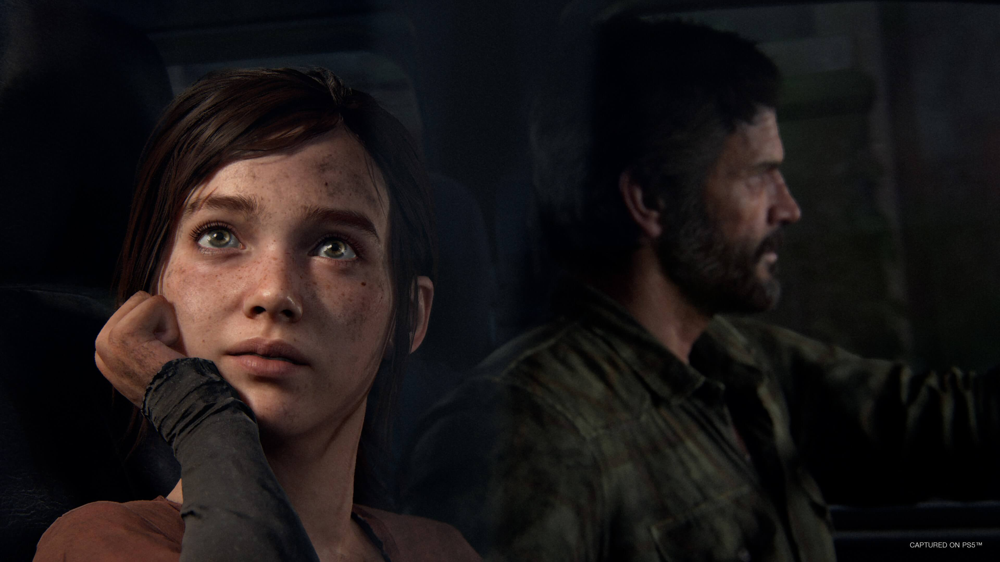

Must Play Video Games
Over the years we've seen some memorable games; Call Of Duty, Super Mario Brothers, even Fortnite. But which games give the player the most immersive, memorable, and emotional gameplay? What characteristics of a game make it a good game? Is it only a good game if it has the most players? Or rather a game that has a true meaning or lesson behind it?
Spider-Man 2

Marvel's Spider-Man 2 is a 2023 action-adventure game developed by Insomniac Games and published by Sony Interactive Entertainment. It is based on the Marvel Comics character Spider-Man, and features a narrative inspired by its long-running comic book mythology which is also derived from various adaptations in other media. It is the third entry in the Marvel's Spider-Man series, acting as a sequel to Marvel's Spider-Man (2018) and a follow-up to Marvel's Spider-Man: Miles Morales (2020). The plot follows Peter Parker and Miles Morales as they come into conflict with Kraven the Hunter, who transforms New York City into a hunting ground for super-powered individuals; and with the extraterrestrial Venom symbiote, which bonds itself to Peter and negatively influences him, threatening to destroy his personal relationships. The gameplay builds on the foundation established by its predecessors, with an emphasis on the multiple play styles offered by Peter Parker and Miles Morales as Spider-Men. The game expands on their existing traversal and combat abilities, including new web-based gadgets and suits that can be unlocked through progressing in the story. It also introduces the former Spider-Man's symbiote suit, granting Parker unique abilities from his previous playable appearance. As with the prior games, content outside the main story consists of completing side-missions and obtaining collectibles dispersed throughout the game's open world, with the player able to switch between Parker and Morales to complete dedicated objectives for each of them.
Ghost of Tsushima

Ghost of Tsushima is a 2020 action-adventure game developed by Sucker Punch Productions and published by Sony Interactive Entertainment. The player controls Jin Sakai, a samurai on a quest to protect Tsushima Island during the first Mongol invasion of Japan. Jin must choose between following the warrior code to fight honorably, or by using practical but dishonorable methods of repelling the Mongols with minimal casualties. The game features a large open world which can be explored either on foot or on horseback. When facing enemies, the player can choose to engage in a direct confrontation using Jin's katana or to use stealth tactics to assassinate opponents. A multiplayer mode titled Ghost of Tsushima: Legends was released in October 2020 and made available separately in September 2021. Sucker Punch began developing the game after the release of Infamous First Light in 2014, as the studio wanted to move on from the Infamous franchise to create a game with a heavy emphasis on melee combat. The studio collaborated with Japan Studio and visited Tsushima Island twice to ensure that the game was as culturally and historically authentic as possible. The team was heavily inspired by samurai cinema, particularly films directed by Akira Kurosawa, as well as the comic book series Usagi Yojimbo. The game's landscape and minimalistic art style were influenced by Shadow of the Colossus, and locations in the game were designed to be "the perfect photographer's dream". While the in-game landmass is similar in shape to Tsushima Island, the team did not intend to create a one-to-one recreation. Ilan Eshkeri and Shigeru Umebayashi composed the game's soundtrack.
The Last of Us
The Last of Us Part I is a 2022 action-adventure game developed by Naughty Dog and published by Sony Interactive Entertainment. A remake of the 2013 game The Last of Us, it features revised gameplay, including enhanced combat and exploration, and expanded accessibility options. Players control Joel, who is tasked with escorting the young Ellie across a post-apocalyptic United States and defend her against cannibalistic creatures infected by a mutated strain of the Cordyceps fungus. The game includes a remake of the 2014 expansion pack The Last of Us: Left Behind, which follows Ellie and her best friend Riley. Development was led by game director Matthew Gallant and creative director Shaun Escayg, who replaced original directors Bruce Straley and Neil Druckmann. Part I was rebuilt for the updated hardware, requiring new animations, art direction, and character models to align with the original development team's vision. The cutscenes and narrative beats were analyzed to identify crucial storylines and their original direction and purpose. The team built upon the game engine of The Last of Us Part II (2020) by expanding the gameplay, technology, and accessibility features. Part I features audio descriptions, supports 3D audio, and uses the DualSense controller's haptic feedback and adaptive triggers.